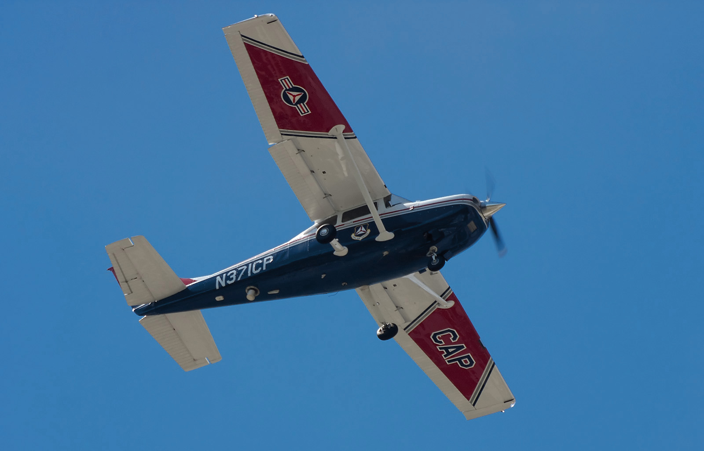
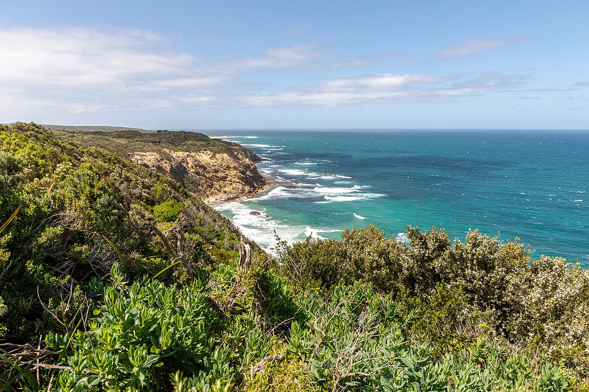

A 20-year-old trainee pilot radios Melbourne air traffic control over Bass Strait to report an aircraft orbiting above him, metallic, shining, with a green light, moving at speeds he can't identify. Six minutes and forty-seven seconds later, mid-sentence, the transmission ends in a burst of metallic noise. Neither Frederick Valentich nor his aircraft was ever found. It remains the most thoroughly documented, and still officially unexplained, pilot UAP encounter in aviation history.
All times in this case file are local Melbourne time (AEST, UTC+10; Victoria had not yet switched to daylight saving in October 1978). The official transcript itself is timestamped in GMT; we've converted every exchange for readability and noted the source format in Sources below.

Frederick Valentich was 20 years old, a member of the Royal Victorian Aero Club working toward his commercial pilot's licence. He held a Class Four instrument rating (enough for basic night flying, well short of a full instrument qualification for flying blind through cloud) and had logged roughly 150 hours in the air. Friends and instructors described him as a keen, if unremarkable, student: enthusiastic, safety-conscious on paper, and by his father's account, fascinated with UFOs.
On the evening of Saturday, October 21, 1978, Valentich filed a flight plan from Moorabbin Airport, Melbourne's general-aviation field, across Bass Strait to King Island and back, a round trip of roughly 240 kilometres (150 miles) each way, logged as night VFR training. He told people at the aero club he was flying over to pick up a friend, and separately that he was collecting crayfish for a dinner party. Investigators later found no evidence either reason was true. No one on King Island was expecting him, and he never notified the island's airport that he was inbound, breaking standard procedure for the crossing.
VH-DSJ departs Moorabbin under clear skies and light winds, good visual flying conditions for the crossing. Valentich's flight plan has him cruising at 4,500 feet, direct across open water.
Valentich reports passing Cape Otway, the Victorian mainland's southernmost point on his route, the last land he would cross before more than an hour of open water to King Island. Nothing about the flight has looked unusual yet.
The full exchange between Valentich and Melbourne Flight Service. See The Transcript below for the complete, verbatim record.
Melbourne Flight Service calls Delta Sierra Juliet one more time. Nothing answers. See The Final Transmission below.
Valentich's estimated time of arrival at King Island passes with no landing and no further radio contact. The alert phase begins almost immediately.
Moorabbin to King Island is roughly 240 km (150 miles), most of it over open water. Valentich's last transmission places him somewhere over Bass Strait, still well short of King Island. The search that followed covered more than a thousand square miles of that gap and found nothing.
Melbourne Flight Service wasn't full radar-controlled air traffic control. It was a lower tier providing traffic advice and weather over Bass Strait, a stretch with no radar coverage at all. At 7:06 PM, a routine traffic check turns strange within ninety seconds.
At 7:06:14 PM, Valentich keyed his microphone with an ordinary question: was there any known traffic below 5,000 feet near him? Melbourne told him no. Twelve seconds later, he came back. There seemed to be a large aircraft below him, at 5,000 feet. Asked what type, he couldn't say. Four bright lights, he told them, like landing lights.
Ninety seconds after that, the aircraft passed directly over him, at least a thousand feet above. Melbourne asked him to confirm it was a large aircraft. Valentich said he couldn't, not at that speed, and asked Melbourne if there was any Air Force traffic in the area. There wasn't. Whatever he was describing wasn't on Melbourne's board, and it wasn't a plane anyone on the ground could account for.
Er, unknown due to the speed it's travelling… is there any air force aircraft in the vicinity?
— Frederick Valentich, 7:07:47 PM, to Melbourne Flight ServiceWhat follows is the complete, verbatim official transcript of Valentich's exchange with Melbourne Flight Service, released by the Australian Department of Transport and preserved today in the National Archives of Australia. It is a public government document. We've converted the original GMT timestamps to local Melbourne time; nothing else has been changed.
DSJ = Frederick Valentich, aboard VH-DSJ (callsign "Delta Sierra Juliet"). FS = Melbourne Flight Service. Ellipses mark pauses recorded in the original transcript; bracketed notes are from the official document itself.
What makes the transcript so unsettling isn't any single line. It's how methodically Valentich keeps reporting, even as what he's describing keeps escalating. He gives his altitude when asked. He confirms details. He answers Melbourne's questions in order, in the flat, procedural cadence of flight training, while narrating something his training gave him no vocabulary for.
Valentich describes the object flying over him two or three times "at speeds I could not identify", his first indication that whatever was pacing him wasn't behaving like conventional traffic. He's still calm enough here to ask Melbourne, straightforwardly, whether it might be a military aircraft.
He reports doing tight orbits himself, and the object matching him, staying above, holding position relative to his own aircraft rather than simply passing by. This is the moment the encounter stops sounding like traffic and starts sounding like pursuit.
His only detailed visual description: a green light, a metallic surface reflecting what light there was, a long shape as it passed. It's the entire physical record of the object. Three fragments of a sentence, and nothing more specific was ever recorded.
The object "vanishes," by his account, then reappears minutes later from the southwest. Almost immediately afterward, Valentich reports his engine running rough ("coughing") at a power setting where that shouldn't happen. Whether the two things were connected was never established.
What I'm doing right now is orbiting, and the thing is just orbiting on top of me also.
— Frederick Valentich, 7:10:20 PM, to Melbourne Flight ServiceAt 7:12:09 PM, Valentich states his intentions plainly, the way he'd been trained to: continue to King Island. In the same breath, he reports the object is back, hovering directly above him. Sixteen seconds after Melbourne acknowledges, he keys the microphone one last time.
It is hovering, and it's not an aircraft.
— Frederick Valentich, 7:12:09 PM, his last coherent sentenceAt 7:12:28 PM, Valentich transmits again: "Delta Sierra Juliet — Melbourne." Then the microphone stays open for seventeen seconds. The official Department of Transport transcript itself notes that "a very strange pulsed noise" is audible for the entire duration, a sound that has been described ever since, by researchers and casual readers alike, as a metallic scraping. No words. No further sentence. Then nothing.
Twenty-one seconds later, at 7:12:49 PM, Melbourne Flight Service calls back: "Delta Sierra Juliet, Melbourne." There is no reply. There has never been a reply. That single unanswered call is the last line of the official transcript. The exact point where a documented radio exchange simply stops being a radio exchange.
20 years old · VH-DSJ, Cessna 182L
"It is hovering, and it's not an aircraft."
The alert phase began within minutes of Valentich's last transmission and escalated fast once King Island confirmed he never landed. What followed was one of the largest air-and-sea searches in Australian aviation history. It found absolutely nothing.
From October 21 to October 25, 1978, the Royal Australian Air Force flew two Lockheed P-3 Orion long-range maritime patrol aircraft over Bass Strait, joined by civilian search planes and ocean-going vessels. Together they covered more than a thousand square miles of open water, a search area chosen from Valentich's last reported position, his heading, and how far a Cessna 182 could plausibly have drifted on the fuel he had left. It turned up nothing. No wreckage. No life raft. No oil slick that matched aviation fuel. Not one confirmed piece of the aircraft.
The only possible physical trace surfaced nearly five years later: on May 16, 1983, an engine cowl flap washed ashore on Flinders Island. Investigators found it consistent with the range of serial numbers that included VH-DSJ's engine, but Flinders Island's own airfield had separately lost two identical cowl flaps from other Cessnas in years prior, so the match was never conclusive. To this day, it remains the closest thing to physical evidence this case has ever produced, and even that is disputed.
The Australian Department of Transport opened a formal accident investigation. Its file sat largely out of public reach for more than three decades. When it finally surfaced, it didn't resolve anything.
Titled "DSJ — Cape Otway to King Island 21 October 1978 — Aircraft Missing," the Department of Transport's complete case file (315 pages, including the radio transcript, flight-plan charts, meteorological data and the search-and-rescue record) is held today by the National Archives of Australia in Melbourne. It stayed effectively inaccessible for years until Adelaide-based researcher Keith Basterfield pushed for its release; a digitised copy went public around 2012.
The Department of Transport's investigation reached a single, formal, and unusual finding for a fatal aviation case: "The reason for the disappearance of the aircraft has not been determined." Where most crash investigations end in a probable cause, this one didn't. The case has never been formally closed since.
Officials floated, without formally adopting, the idea that Valentich became spatially disoriented over the dark water, possibly inverted, and mistook his own aircraft's lights reflected on the surface, or lights from a nearby vessel or island, for an object above him. It was never elevated to an official cause.
Independent of Valentich entirely, VUFORS (the Victorian UFO Research Society) and researcher Keith Basterfield later catalogued around sixty separate reports of unusual lights and objects across Victoria, Bass Strait and Tasmania between October 18 and 23, 1978, concentrated on the evening of the 21st. They include a plumber's photographs near Cape Otway around 6:45 PM, a sighting from Apollo Bay, and a driver on the Geelong road who reported a "solid mass of light" with green flickering lights at 7:10 PM, almost the exact minute Valentich was describing his own green light, dozens of kilometres away.

It's funny all these people ringing up with UFO reports well after Valentich's disappearance.
— Ken Williams, Department of Transport spokesman, contemporary press commentNo theory accounts for every detail in the transcript. That's precisely why the file has never been closed. We lay out the leading explanations here as investigators and researchers have actually argued them, not as a verdict.
The most-cited mundane theory, argued in detail by researchers James McGaha and Joe Nickell, holds that a 150-hour pilot with only a basic instrument rating, flying at night over featureless water with no visible horizon, entered a "graveyard spiral" and lost track of up and down, possibly mistaking Venus, Mars, Mercury or the star Antares, all above the horizon that night, for a hovering light. It's consistent with his rough-idling engine (an inverted or badly out-of-trim aircraft can starve a carburetor of fuel) and with the Department of Transport's own inverted-flight theory. It does not fully explain the object's reported behaviour (matching his orbits, vanishing and reappearing from a specific new direction) as anything but the confused perception of a disoriented pilot.
What sets this case apart from most UFO reports is that it comes with an official, government-transcribed radio recording, not just a witness account after the fact. Melbourne Flight Service had no known traffic on file, twice, at Valentich's own request. Roughly sixty independent ground observations were logged in the same region on the same evening. No debris consistent with a crash was ever recovered despite an extensive search. None of that proves what the object was, only that "misidentified aircraft" was ruled out in real time by the people whose job was to know, and that nothing conventional has ever been confirmed to explain it.
VH-DSJ had enough fuel for roughly five hours in the air, far more than the half-hour crossing needed, and investigators found his stated reasons for the flight, picking up a friend or crayfish, were false. He also skipped the standard notification to King Island of an inbound aircraft. Some researchers have pointed to a report of an unidentified light aircraft landing near Cape Otway around the same time and speculated Valentich staged his own disappearance. No confirmed sighting of him alive has ever surfaced, and his family has always rejected this explanation.
Raised early on and largely set aside. Keith Basterfield's interviews with people who knew Valentich, cited by multiple researchers since, "virtually eliminated this possibility", his demeanour in the weeks before, his plans, and the steady, procedural tone of his own voice throughout the transcript are all inconsistent with it.
The simplest conventional explanation, that Valentich was pacing a real, ordinary aircraft, runs directly into the transcript: Melbourne Flight Service checked twice and had no known traffic on file, and the RAAF has stated it had no aircraft operating in the area that evening either. No confirmed conventional aircraft has ever been matched to what he described.
Every fact and every transcript line in this case file was cross-referenced against at least two independent sources, anchored by the official government transcript and archival file. All links open in a new tab.
The complete official Department of Transport transcript, with GMT timestamps, hosted by UFO Research (NSW). This is the primary source for every quoted line in this case file.
The Department of Transport's complete 315-page investigation file, "DSJ — Cape Otway to King Island 21 October 1978 — Aircraft Missing," held by the National Archives of Australia's Melbourne office and searchable via RecordSearch.
Independent researcher Keith Basterfield's compiled catalogue of the roughly sixty separate sighting reports from the same region and dates, including the Roy Manifold, Ken Hansen and Col Morgan accounts referenced above.
An independent case summary drawing on the official file, including search-and-rescue timeline detail and contemporary quotes from Guido Valentich and Department of Transport officials.
An aviation-history society's detailed case retrospective, examining the flight, the search and the investigation from an aviation-safety perspective.
An independent fact-check examining the case's claims, evidence and leading theories.
Used as a secondary cross-reference for dates, figures and the range of proposed theories; every fact drawn from it was checked against a primary or independent source above.